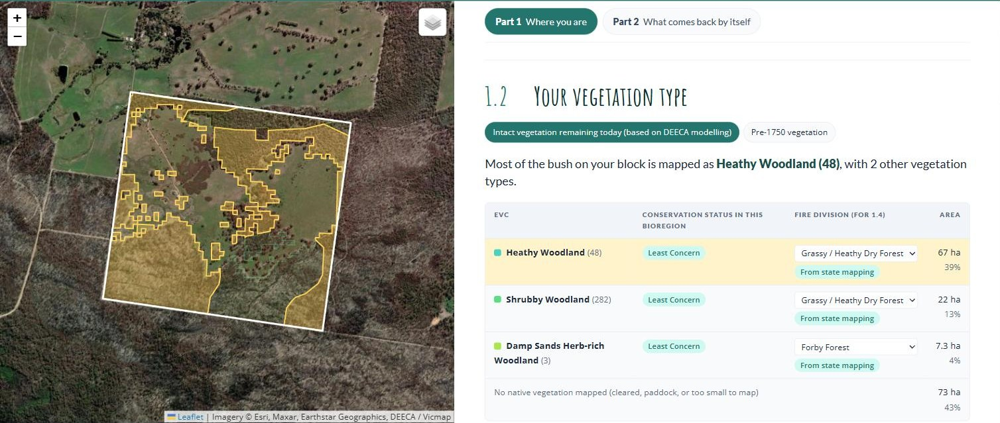
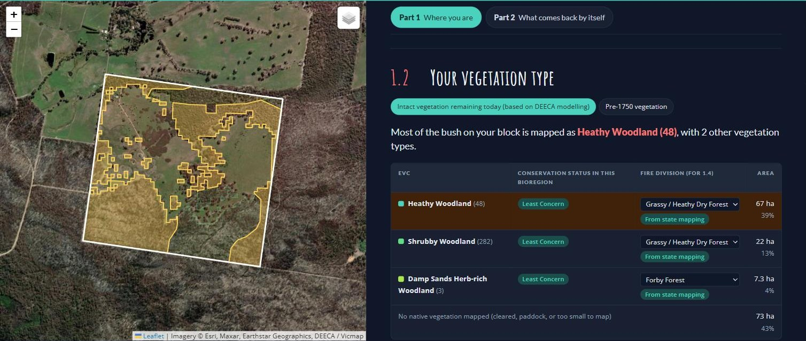

Finding your vegetation type
How often your bush should burn, what should return on its own, and what plants are appropriate to plant there all depend on which vegetation type you have.
Every bioregion has a list of possible vegetation types. A vegetation type is a particular community of plants that grows wherever the same conditions repeat, such as the same soil, slope, drainage and rainfall. Each one has its own recognisable mix of trees, shrubs, grasses and herbs. A single block can have several vegetation types side by side, set by changes in the landscape, such as heathy woodland on a sandy rise and herb-rich woodland down in a damp gully.
Victoria’s official name for these vegetation types is Ecological Vegetation Class, or EVC. The state has sorted all its native bush into about 300 of these classes, each with a name and a number, such as Heathy Woodland (48) or Plains Grassy Woodland (55). It has mapped them across Victoria, both as the bush stands today and as it was before 1750. The conservation status listed for each EVC is based on how much of it has been lost since 1750.
Once you know your EVC, you can find out how it responds to fire. The state has sorted every EVC into a fire division: a group of EVCs that behave in much the same way when fire comes through. Victoria’s 300 or so EVCs fall into 32 of these divisions.1 Within one division, the bush recovers at about the same pace and has the same sensitive plants to protect. So instead of setting fire rules for every vegetation type, ecologists set them once for each division: how soon after one fire the next can safely come, how long the bush can go without fire, and how long it takes to grow from young regrowth to old bush.
With that knowledge, you can look up your own EVCs and fire divisions.
In the Wimmera Bushfire Ecology Lookup Tool, section 1.2, Your vegetation type, lists each vegetation type mapped on your block, with its conservation status, its fire division and its area. The two buttons at the top switch between Intact vegetation remaining today (the 2005 mapping) and Pre-1750 vegetation. Click a row to see where that vegetation sits on your block: it turns yellow on the map.


Most of the bush on the example block is mapped as Heathy Woodland (EVC 48), 67 hectares or about 40% of the block. Another 22 hectares is Shrubby Woodland (EVC 282) and 7 hectares Damp Sands Herb-rich Woodland (EVC 3). All three are listed as Least Concern in this bioregion. The other 73 hectares, 43% of the block, has no native vegetation mapped: the cleared paddocks you can see on the aerial photo.
Switch to Pre-1750 vegetation and the whole block was bush: 78% Heathy Woodland, 17% Shrubby Woodland and 5% Damp Sands Herb-rich Woodland. That tells you which plants would be best suited to those areas if you revegetated (section 4.9).
The lookup tool matches Heathy Woodland and Shrubby Woodland to the Grassy / Heathy Dry Forest fire division, and Damp Sands Herb-rich Woodland to Forby Forest. This is where we learn how those vegetation types respond to fire. For example, Grassy / Heathy Dry Forest is fire-dependent: much of its regeneration is triggered by fire, and a good deal of what grows there is killed outright and comes back only from seed.
Where this comes from. DEECA’s 2005 and pre-1750 Ecological Vegetation Class mapping, with Bioregional Conservation Status. To look at the source maps yourself, open NatureKit, search your address, and turn on 2005 Ecological Vegetation Classes or Pre-1750 Ecological Vegetation Classes.
Worth stepping through NatureKit once to confirm the layer names in the note above, which come from DEECA documentation rather than the live tool.
Yasmin Kelsall pointed to the regional EVC reports, where experts did on-ground flora assessments, as the place to check what should grow in each EVC. Once those two report titles come off her slides, add them here and in 4.9.